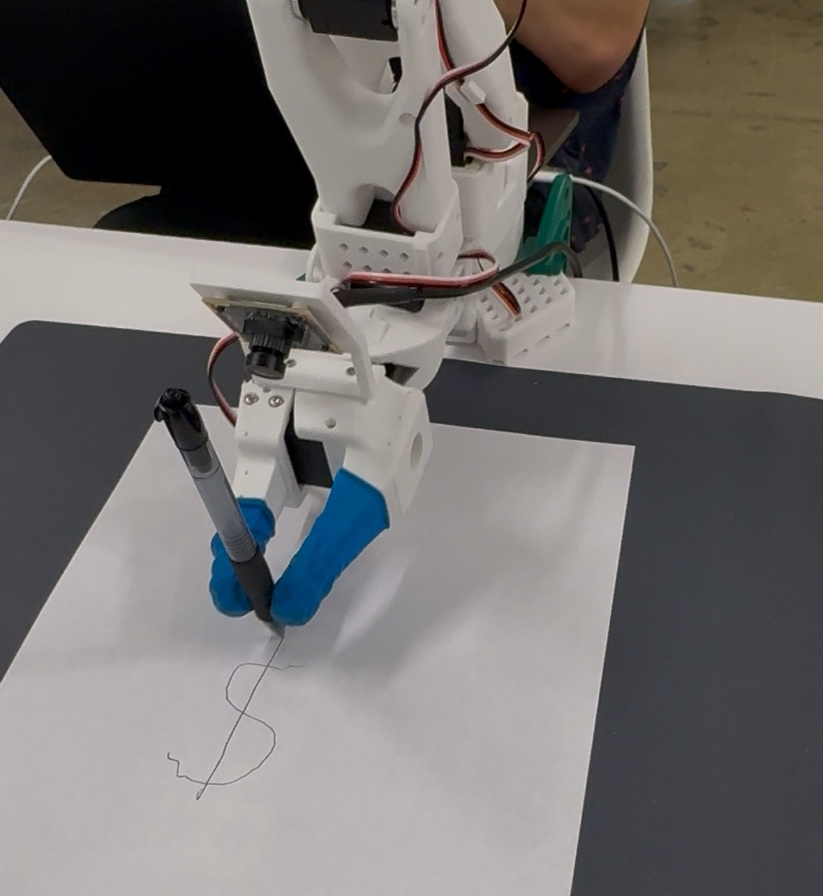

LeRobot Arm Hackathon NYC
Contributions
- Leader and follower robot had mapped trajectories, so the mechanical and electrical noise could be separated and a filter could be applied to the electrical noise to reduce trembling and increasing speed by 200%
- Built and calibrated robot leader and follower, troubleshooted hardware issues with motor
Results
- Won $1000 prize for "Most Innovative Use of Data"
- Robot can pick up a pen, draw a dollar sign ($), and then place the pen down autonomously using cameravision as feedback
Skills
- Action Chunking Transformer (ACT) Policy
- Data Filtering
- Machine Learning

Machine Learning Algorithm - Doosan H2515 Pick and Place
Contributions
- Trained AI and implemented image processing to identify cubes and return pixel location and color classification.
- Converted pixel coordinates to numerical inverse kinematic solution for arm navigation
- Created path planning algorithms for robot arm, built client-server connection with TCP protocol to send commands for robot to execute
Results
- Robot able to execute sorting tasks autonomously
- Algorithm able to identify precise locatiosn of cubes for sorting or building operations
Skills
- OpenCV
- YOLOv8
- DRL Programming Language
- Python
- Path Planning
- Pick and Place
Using Gradient to Compute Min. Norm Pseudoinverse Redundancy Resolution
Contributions
- Calculated Jacobian and gradient of path, projecting into null space to accomplish secondary objective
- Simulated robot links and movement, implementing minimum norm pseudoinverse redundancy resolution
Results
- Robot goes from starting position to follow trajectory, maintaining orthogonality to surface. This is useful in applications such as welding or writing, where the end effector must maintain a specific angle to the surface
Skills
- MATLAB
- Jacobian
- Resolved Rates
Control and Resolved Rates Simulations in MATLAB
Contributions
- Implemented cost functions to optimize link speeds for optimization
- Implemented inverse kinematics for Puma 560 robot to adhere to minimum and maximum speed parameters
- Simulated robot links and movement in MATLAB using first order interpolation.
Results
- Closed loop algorithm enabled robot to adhere to constraints within millimeter tolerance in the translational frame and 0.0524 radians in the rotational frame
- Gained deeper understanding of robot behavior to predict collision and manage motor speeds
Skills
- Cost Functions
- Resolved Rates
- MATLAB

Doosan H2515 Robot Gripper - End Effector
Contributions
- End effector designed using a gear and hinging mechanism to open and close jaws
- Arduino sends PWM signal to a motor controller for actuation of jaws, controlled by digital IO on the robot's flange. Allows the jaw actuation to be toggled directly by the teaching pendant interface.
- Voltage divider circuit constructed to step voltage seen by the Arduino down from the robot flange
Results
- End effector can be toggled directly from the teaching pendant and programmed to open and close using Doosan Programming Language (DRL)
- Adjustment of PWM signal sent to controller can be adjusted to hold various sized objects
Skills
- SolidWorks
- Mechatronics
- 3D Printing
SESMA 3.0 - Soft Exosuit for Patients with Spinal Muscular Atrophy
Contributions
- Recorded positional leg data using 8 markers, then used 3D splines to analyze data and utilize numerical techniques to discretize data to calculate the change in length of a cable routed down the leg for sit to stand transitions.
- Used data and compared with knee torque curves to determine optimal release of clutch mechanism for standing assistance
- Machined, 3D printed components in functional prototype
Results
- Achieved 10% knee assistance
- Timing of mechanism with PID compensation to monitor transitions for real-time feedback and control
Skills
- CNC programming and machining
- PID compensation
- 3D splines
Hand Squeezing Device for Grip Strength Rehabilitation
Contributions
- Integrated sensors, actuators, and an LCD display using a PIC16F88 microcontroller
- Wired, debugged system, researching functions in PICBASIC language that could be used to convert analog to digital signal
- Implemented fourbar linkage system which adjusted the tension of a band placed inside the device
Results
- LCD display programmed to output repetition count and force output
- Potentiometer successfully controlled servo connected to fourbar linkage, adjusting force as desired
Skills
- PICBasic Pro
- Mechatronics
- Fourbar Linkage